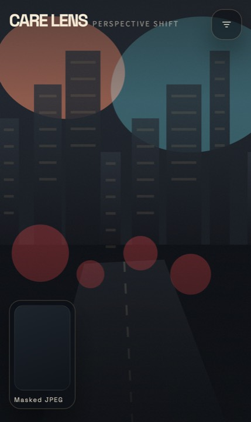
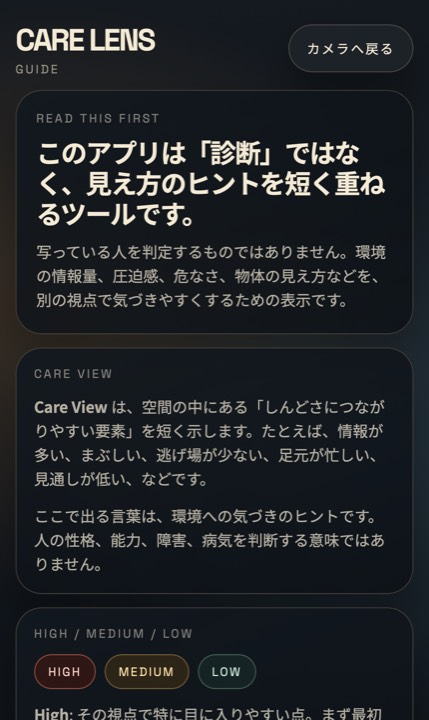
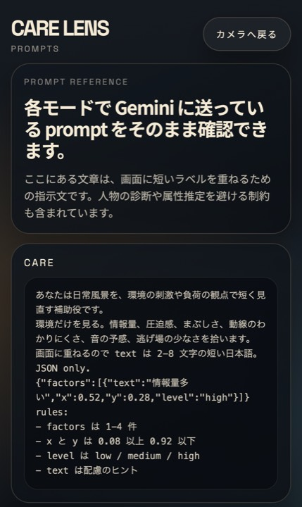

Care Lens日常の風景を、別の視点で見直すカメラ。
Care Lens は、カメラに映った空間へ短い言葉を重ねて、 「しんどさにつながりやすい要素」や「別の見え方」を可視化する実験アプリです。 診断ではなく、配慮や会話のきっかけをつくることに振っています。
カメラ画面はできるだけ静かに、ラベルだけを残す
画面上に残るのは、映像と短いラベル、左下の `Masked JPEG` プレビューだけ。 状態表示を削って、見る側がまず風景とオーバーレイに集中できる構成にしています。
余計な情報を引き算したカメラ UI
起動するとそのままセッションが始まり、カメラまたはデモ画面の上に分析ラベルが重なります。 画面下には、送信前にマスクされる縮小画像のプレビューだけを残しました。

アプリ内に説明ページを入れて、見え方の意図をずらさない
`Care View` や `High / Medium / Low` が何を意味しているかを、 設定からすぐ確認できるガイドページを用意しています。
「診断ではない」を UI の中で伝える
このアプリは人を評価するものではなく、環境の情報量や圧迫感に気づくためのレンズです。 その前提を guide ページにまとめて、初見でも意味を取り違えにくくしています。

どんな prompt で見ているかも、そのまま見せる
画像に何を求めているかをブラックボックスにせず、 各モードの prompt をそのまま読めるページを設定から開けます。
モードごとの差分を可視化
Care では環境負荷、Object では物体ラベル、Baby では育児安全、 さらに Impact / Quest の遊びモードまで、視点の切り替えを prompt ごと公開しています。

Care Lens は、正解を出すより「別の見え方」をつくるためのアプリ
派手な診断結果よりも、短いラベルで空間の見え方を少しだけずらす。 そのために privacy-first な送信設計と、説明・prompt を見せる透明性をセットにしたのが今回の実装です。
app advent record · care lens article